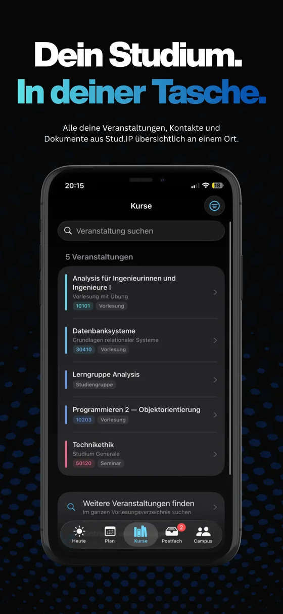
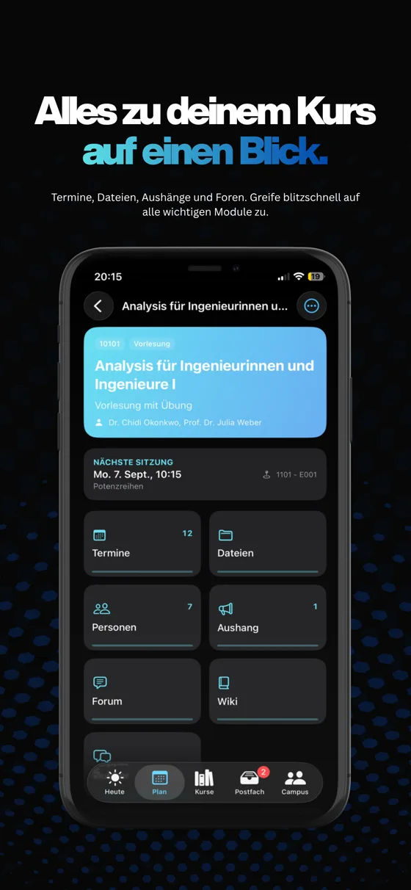
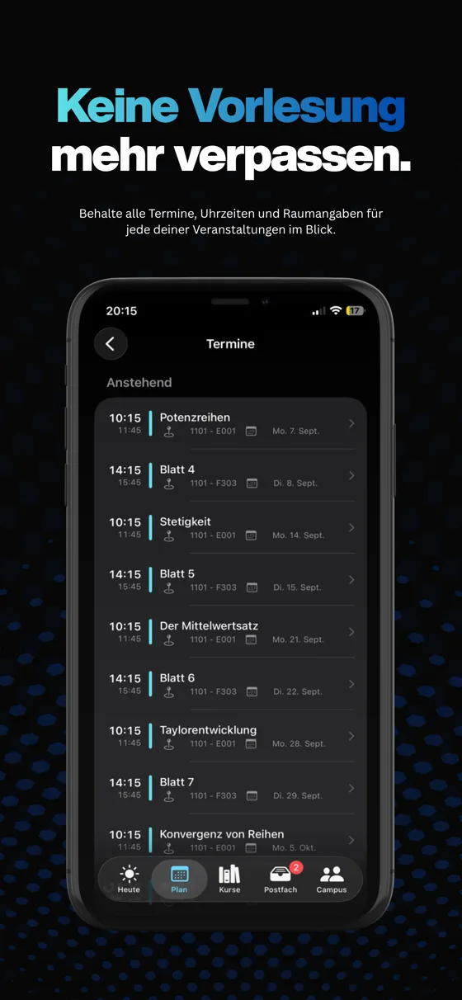
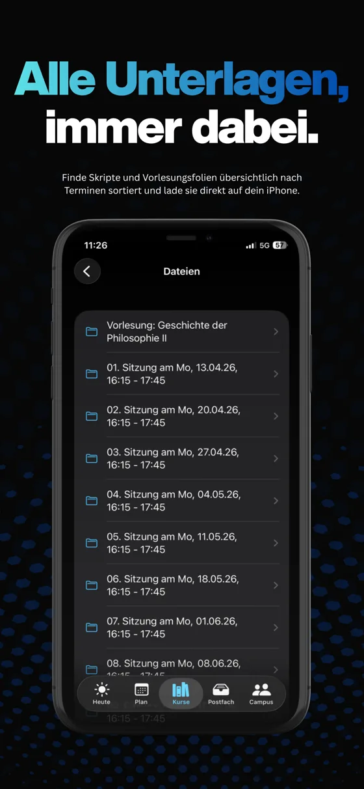

Dein Stud.IP.
In deiner Tasche.
StudGo ist die native iOS-App für dein Stud.IP: Stundenplan, Kurse, Dateien, Mensa und Nachrichten, dazu Widgets für den Sperrbildschirm. Schnell, privat und kostenlos.
Kostenlos · Ohne Werbung · iOS ab 16 · Ohne Konto testbar
Alles, was der Uni-Alltag braucht
Von der ersten Vorlesung bis zur letzten Abgabe: StudGo deckt die Dinge ab, die man mehrmals pro Woche in der Hand hat. Alles in einer App, alles auch offline.
Stundenplan & Termine
Wochenraster mit Countdown zum nächsten Termin, Sitzungstermine mit Raum und Thema, Feiertage im Kalender. Alles auch offline, wenn der Campus-Funk gerade wieder weg ist.
Widgets
Der nächste Termin und ungelesene Nachrichten direkt auf dem Sperrbildschirm. Die Widgets fragen nie selbst beim Server an, ein Antippen öffnet den passenden Reiter.
Kurse, Dateien & Courseware
Vorlesungsverzeichnis mit Volltextsuche, Ordnerbäume mit Vorschau, Download und Teilen, Lernmaterialien aus der Courseware direkt in der App.
Nachrichten & Blubber
Das Postfach und der Chat deiner Kurse, übersichtlich in einer App, mit Mitteilung, wenn etwas Neues ankommt.
Ankündigungen
Neuigkeiten aus deinen Kursen und von der Hochschule, sauber formatiert, inklusive Sprechstunden und Kontakten.
Campus & Mensa
Speisepläne in Tages- und Wochenansicht, je Gericht alle Preise und Kennzeichnungen, Raumangaben und die wichtigsten Links: alles, was zwischen zwei Vorlesungen fehlt.
Melden & Blockieren
Beiträge melden, Personen blockieren: Blockierte Inhalte verschwinden sofort aus allen Listen. Meldungen werden binnen 24 Stunden bearbeitet.
Demo-Modus
Die ganze App ohne Anmeldung ausprobieren, mit erfundenen Daten, die keinen Uni-Server berühren.
Dunkel & farbig
Dunkle Oberfläche für den späten Abend, acht Farbwelten und ein Stundenplan, der sich nicht verrechnet.
Privates Projekt, eigene Prinzipien
StudGo ist ein privates Studentenprojekt. Und genau deshalb anders.
Privat von Haus aus
Die Anmeldung läuft per OAuth 2.0 mit PKCE über das Hochschulkonto. Dein Passwort sieht die App nie. Inhalte bleiben auf deinem Gerät, Tokens liegen ausschließlich im Schlüsselbund. Es gibt keinen Anbieter-Server und keine Nutzungsstatistik.
Offen und kostenlos
Der komplette Quelltext liegt unter MIT-Lizenz auf GitHub. Kein Preisschild, keine In-App-Käufe, keine Werbung. Und das bleibt so.
Eine Hochschule, ganz
StudGo verbindet sich direkt mit studip.uni-hannover.de. Statt durchschnittlich für hundert Hochschulen gebaut zu sein, ist es genau für dein Stud.IP gemacht.
Aus der App
Seitlich ziehen oder wischen.




Häufige Fragen
Funktionieren die Widgets auch ohne Empfang?
Ja. Die Widgets fragen nie selbst beim Uni-Server an: Sie zeigen den Stand, den die App beim letzten Öffnen oder beim Hintergrundlauf hinterlegt hat. Ohne Internet steht dort also der letzte bekannte Termin, nicht eine Fehlermeldung.
Mit welchem Stud.IP funktioniert StudGo?
StudGo ist für die Stud.IP-Installation unter studip.uni-hannover.de gebaut und verbindet sich direkt mit ihr. Die Anmeldung läuft über dein Hochschulkonto.
Was kostet StudGo?
Nichts. Die App ist kostenlos, ohne Werbung und ohne In-App-Käufe. Der Quelltext steht unter MIT-Lizenz offen auf GitHub.
Gibt es StudGo für Android?
Derzeit nur iOS (ab iOS 16). Eine Android-Version steht nicht auf der Roadmap. Die eine Plattform richtig zu machen, reicht für ein Nebenprojekt.
Was passiert mit meinen Daten?
Die App hat kein eigenes Backend und spricht verschlüsselt direkt mit dem Stud.IP-Server. Zugangs-Tokens liegen nur im Schlüsselbund deines Geräts. Alle Einzelheiten stehen in der Datenschutzerklärung.
Ich sehe Inhalte, die dort nicht hingehören. Was kann ich tun?
Lange auf den Beitrag tippen und „Beitrag melden“ wählen, oder die Person blockieren: Blockierte Inhalte verschwinden sofort aus allen Listen. Jede Meldung erreicht den Entwickler unmittelbar und wird innerhalb von 24 Stunden bearbeitet.
Ich habe einen Fehler gefunden. Wohin damit?
Am besten als Issue auf GitHub oder per Mail an maximilian.elias.paasch@gmail.com.
Als Nächstes geplant
Bereit für das Semester?
Kostenlos, ohne Anmeldung testbar und in einer Minute installiert.